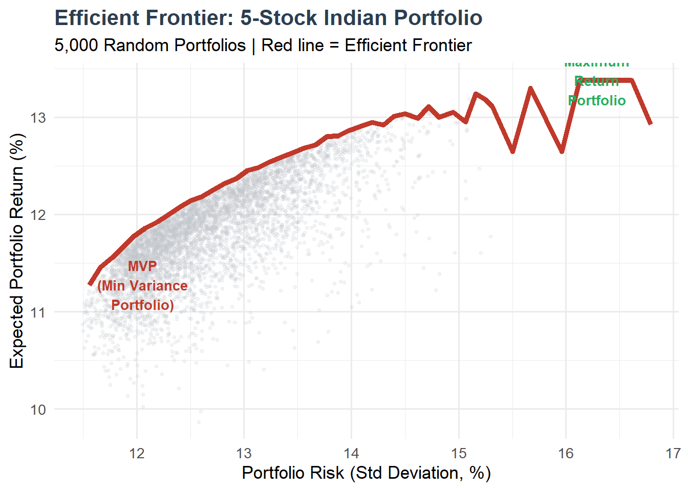
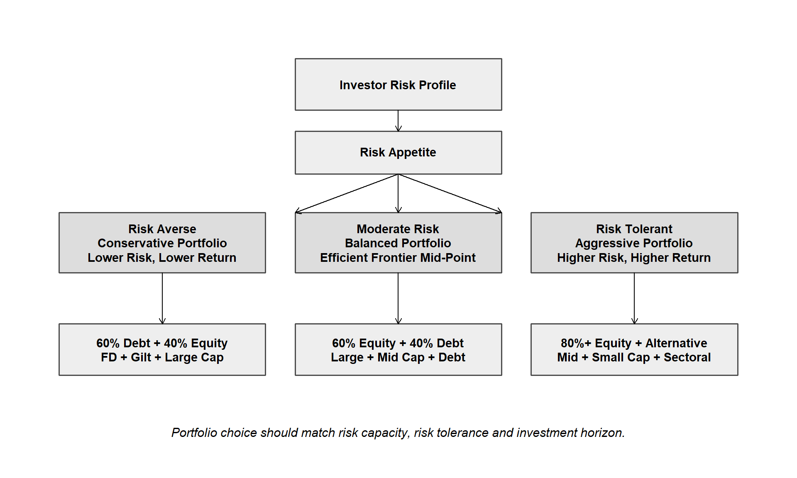
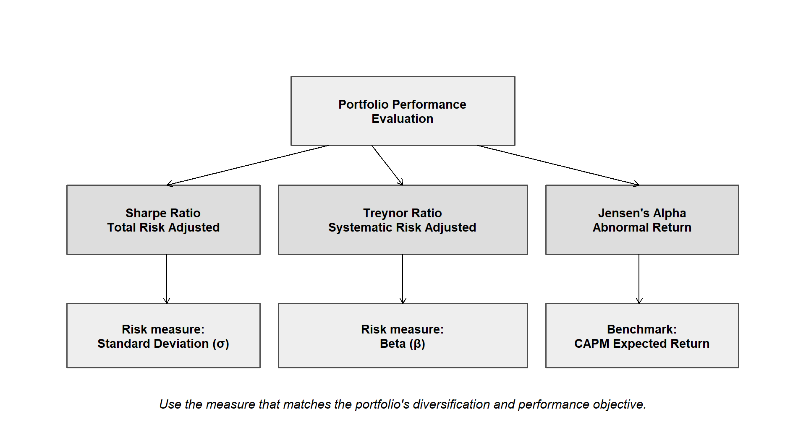
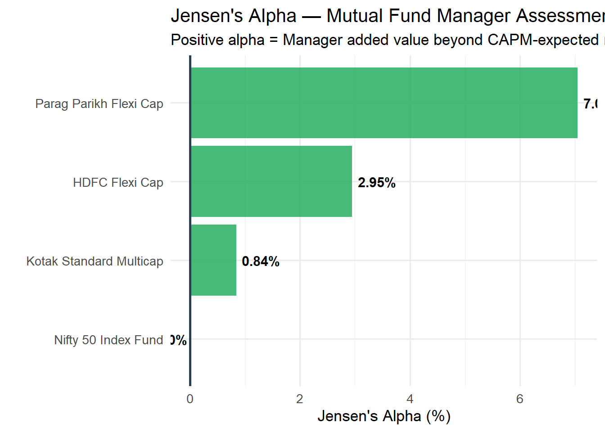

Chapter 5 Portfolio Selection and Revision
Learning Objectives
After completing this unit, students will be able to:
- Explain the concept of a portfolio and the principle of portfolio diversification
- Calculate portfolio return and portfolio risk (variance and standard deviation)
- Describe Markowitz Modern Portfolio Theory and construct the Efficient Frontier
- Apply portfolio selection criteria using the mean-variance framework
- Discuss the need for and constraints on portfolio revision
- Evaluate portfolio performance using Sharpe Ratio, Treynor Ratio, and Jensen’s Alpha
- Interpret performance measures in the context of Indian mutual funds and benchmark indices
5.1 5.1 Portfolio Analysis — Introduction
5.1.1 5.1.1 What is a Portfolio?
A portfolio is a collection of financial investments — stocks, bonds, mutual fund units, ETFs, real estate, gold — held by an individual or institutional investor. The fundamental insight of portfolio theory is that:
“The whole is different from — and often better than — the sum of its parts.”
Combining assets that respond differently to market events can reduce total risk without proportionally reducing expected return. This is the mathematical basis of diversification.
Portfolio vs. Individual Security:
| Aspect | Individual Security | Portfolio |
|---|---|---|
| Risk | Full company/sector risk | Risk is averaged and reduced |
| Return | Dependent on single security | Weighted average of all holdings |
| Volatility | Higher | Lower (due to diversification) |
| Suitability | Experts / Speculators | All investors |
| Monitoring | Single security | Multiple holdings |
5.1.2 5.1.2 Portfolio in the Indian Context
Indian investors increasingly hold portfolios through: - Direct equity (Demat accounts on NSE/BSE — 160 million+ demat accounts in 2024) - Mutual funds (8.7 crore SIP accounts in 2024) - Portfolio Management Services (PMS) — minimum ₹50 lakh, SEBI-regulated - Alternative Investment Funds (AIFs) — minimum ₹1 crore, for HNIs - National Pension System (NPS) — pension portfolio managed by PFRDA
5.2 5.2 Return and Risk of a Portfolio
5.2.1 5.2.1 Portfolio Return
The expected return of a portfolio is the weighted average of the expected returns of its constituent securities:
\[\boxed{E(R_p) = \sum_{i=1}^{n} w_i \cdot E(R_i)}\]
Where: - \(w_i\) = Weight of security \(i\) in portfolio (proportion of total investment) - \(E(R_i)\) = Expected return of security \(i\) - \(\sum w_i = 1\) (weights must sum to 1)
Example 5.1: A portfolio consists of:
| Stock | Weight | Expected Return |
|---|---|---|
| TCS | 30% | 14% |
| HDFC Bank | 25% | 12% |
| Reliance Industries | 20% | 11% |
| Asian Paints | 15% | 13% |
| ITC | 10% | 9% |
stocks <- c("TCS", "HDFC Bank", "Reliance", "Asian Paints", "ITC")
weights <- c(0.30, 0.25, 0.20, 0.15, 0.10)
exp_returns <- c(0.14, 0.12, 0.11, 0.13, 0.09)
port_return <- sum(weights * exp_returns)
result_df <- data.frame(Stock = stocks,
Weight = paste0(weights*100, "%"),
Exp_Return = paste0(exp_returns*100, "%"),
Contribution = paste0(round(weights*exp_returns*100, 3), "%"))
kable(result_df,
caption = "Table 5.1: Portfolio Return Calculation",
col.names = c("Stock", "Weight (w)", "Expected Return", "Contribution (w × r)"),
booktabs = TRUE) %>%
kable_styling(bootstrap_options = c("striped", "hover"), full_width = FALSE) %>%
row_spec(0, bold = TRUE, color = "white", background = "#2c3e50")| Stock | Weight (w) | Expected Return | Contribution (w × r) |
|---|---|---|---|
| TCS | 30% | 14% | 4.2% |
| HDFC Bank | 25% | 12% | 3% |
| Reliance | 20% | 11% | 2.2% |
| Asian Paints | 15% | 13% | 1.95% |
| ITC | 10% | 9% | 0.9% |
##
## Portfolio Expected Return: 12.25 %5.2.2 5.2.2 Portfolio Risk (Two-Asset Portfolio)
Portfolio risk is NOT simply the weighted average of individual standard deviations — this is the critical insight of portfolio theory. Portfolio risk depends on:
- The individual risks (standard deviations) of each security
- The correlation coefficient between securities (ρ)
For a two-asset portfolio:
\[\boxed{\sigma_p^2 = w_1^2 \sigma_1^2 + w_2^2 \sigma_2^2 + 2 w_1 w_2 \rho_{12} \sigma_1 \sigma_2}\]
\[\sigma_p = \sqrt{w_1^2 \sigma_1^2 + w_2^2 \sigma_2^2 + 2 w_1 w_2 \rho_{12} \sigma_1 \sigma_2}\]
Where: - \(w_1, w_2\) = Portfolio weights - \(\sigma_1, \sigma_2\) = Standard deviations of individual assets - \(\rho_{12}\) = Correlation coefficient between assets 1 and 2 - \(Cov_{12} = \rho_{12} \sigma_1 \sigma_2\)
The role of correlation (ρ):
| ρ Value | Effect on Portfolio Risk |
|---|---|
| ρ = +1 | No diversification benefit; \(\sigma_p\) = weighted avg of \(\sigma_1, \sigma_2\) |
| 0 < ρ < +1 | Partial diversification benefit |
| ρ = 0 | Significant diversification benefit |
| -1 < ρ < 0 | Maximum diversification benefit |
| ρ = -1 | Perfect hedge; risk can be reduced to zero |
Example 5.2: Two-asset portfolio — HDFC Bank (Asset 1) and ITC (Asset 2): - \(w_1 = 0.60\), \(\sigma_1 = 18\%\) (HDFC Bank) - \(w_2 = 0.40\), \(\sigma_2 = 14\%\) (ITC) - \(\rho_{12} = 0.35\) (moderate positive correlation)
w1 <- 0.60; w2 <- 0.40
s1 <- 0.18; s2 <- 0.14
rho <- 0.35
var_p <- w1^2 * s1^2 + w2^2 * s2^2 + 2 * w1 * w2 * rho * s1 * s2
sd_p <- sqrt(var_p)
cat("Portfolio Variance:", round(var_p * 100, 4), "%²\n")## Portfolio Variance: 1.9034 %²## Portfolio Std Deviation: 13.8 %## Weighted Avg Std Dev (no diversification): 16.4 %## Diversification Benefit: 2.6 percentage points5.2.3 5.2.3 Three-Asset Portfolio Risk
For an n-asset portfolio, the variance is:
\[\sigma_p^2 = \sum_{i=1}^{n} w_i^2 \sigma_i^2 + \sum_{i=1}^{n} \sum_{j \neq i}^{n} w_i w_j Cov_{ij}\]
This can be computed efficiently using matrix algebra:
\[\sigma_p^2 = \mathbf{w}^T \mathbf{\Sigma} \mathbf{w}\]
Where w is the weight vector and Σ is the covariance matrix.
# Three-asset portfolio: TCS, HDFC Bank, ITC
weights_3 <- c(0.40, 0.35, 0.25)
returns_3 <- c(0.14, 0.12, 0.09)
# Covariance matrix (annualised, approximate)
cov_matrix <- matrix(c(
0.0400, 0.0126, 0.0056, # TCS
0.0126, 0.0324, 0.0072, # HDFC Bank
0.0056, 0.0072, 0.0196 # ITC
), nrow = 3)
port_ret_3 <- sum(weights_3 * returns_3)
port_var_3 <- t(weights_3) %*% cov_matrix %*% weights_3
port_sd_3 <- sqrt(port_var_3)
cat("3-Asset Portfolio:\n")## 3-Asset Portfolio:## Expected Return: 12.05 %## Portfolio Variance: 1.7502## Portfolio Std Deviation: 13.23 %5.3 5.3 Modern Portfolio Theory — Markowitz Model
5.3.1 5.3.1 Background
Harry Markowitz published his seminal paper “Portfolio Selection” in the Journal of Finance (1952), which earned him the Nobel Prize in Economics in 1990. The Markowitz model — also called Mean-Variance Analysis — provided the first rigorous mathematical framework for portfolio construction.
Core Proposition: > An investor should choose portfolios that offer the maximum expected return for a given level of risk, or equivalently, the minimum risk for a given expected return. These optimal portfolios form the Efficient Frontier.
5.3.2 5.3.2 Assumptions of the Markowitz Model
- Investors are rational and risk-averse
- Decision-making is based on expected return (mean) and risk (variance/SD)
- Investors prefer higher return for the same risk and lower risk for the same return
- Returns follow a normal distribution
- Markets are perfectly efficient and liquid
- There are no taxes or transaction costs (simplified assumption)
- Single-period investment horizon
5.3.3 5.3.3 The Efficient Frontier
The Efficient Frontier is the set of all portfolios that offer: - Maximum return for a given level of risk, OR - Minimum risk for a given level of return
Portfolios below the Efficient Frontier are inefficient (dominated portfolios). No rational investor should hold them.
set.seed(100)
n_portfolios <- 5000
# Simulate random portfolios with 5 Indian stocks
# Expected returns: TCS, HDFC Bank, Reliance, Asian Paints, ITC
mean_returns <- c(0.14, 0.12, 0.11, 0.13, 0.09)
# Approximate covariance matrix
sigma <- matrix(c(
0.040, 0.013, 0.010, 0.015, 0.006,
0.013, 0.032, 0.011, 0.012, 0.007,
0.010, 0.011, 0.035, 0.010, 0.009,
0.015, 0.012, 0.010, 0.038, 0.008,
0.006, 0.007, 0.009, 0.008, 0.020
), nrow = 5)
port_returns <- numeric(n_portfolios)
port_risks <- numeric(n_portfolios)
for (i in 1:n_portfolios) {
# Random weights
w <- runif(5)
w <- w / sum(w)
port_returns[i] <- sum(w * mean_returns)
port_risks[i] <- sqrt(t(w) %*% sigma %*% w)
}
sim_df <- data.frame(Risk = port_risks * 100, Return = port_returns * 100)
# Find efficient frontier approximation
efficient <- sim_df %>%
mutate(Risk_bin = cut(Risk, breaks = 50)) %>%
group_by(Risk_bin) %>%
summarise(Max_Return = max(Return), Avg_Risk = mean(Risk)) %>%
filter(!is.na(Risk_bin)) %>%
arrange(Avg_Risk)
ggplot(sim_df, aes(x = Risk, y = Return)) +
geom_point(alpha = 0.15, size = 0.8, color = "#bdc3c7") +
geom_line(data = efficient, aes(x = Avg_Risk, y = Max_Return),
color = "#c0392b", linewidth = 1.8) +
annotate("text", x = min(efficient$Avg_Risk) + 0.5,
y = efficient$Max_Return[which.min(efficient$Avg_Risk)],
label = "MVP\n(Min Variance\nPortfolio)",
color = "#c0392b", size = 3.5, fontface = "bold") +
annotate("text", x = max(efficient$Avg_Risk) - 0.5,
y = max(efficient$Max_Return),
label = "Maximum\nReturn\nPortfolio",
color = "#27ae60", size = 3.5, fontface = "bold") +
labs(title = "Efficient Frontier: 5-Stock Indian Portfolio",
subtitle = "5,000 Random Portfolios | Red line = Efficient Frontier",
x = "Portfolio Risk (Std Deviation, %)",
y = "Expected Portfolio Return (%)") +
theme_minimal(base_size = 13) +
theme(plot.title = element_text(face = "bold", color = "#2c3e50"))
Figure 5.1: Figure 5.1: Efficient Frontier — Indian Stock Portfolio
Source: Compiled using simulated data based on NSE historical returns and covariance estimates.
Key Points on the Efficient Frontier:
- Minimum Variance Portfolio (MVP) — Leftmost point; lowest possible risk for any expected return level
- Maximum Return Portfolio — Highest point; single asset with highest individual return
- The efficient set — All portfolios on the upper portion of the frontier from MVP onwards
- Dominated portfolios — All points below and to the right of the frontier (same risk, lower return)
5.3.4 5.3.4 Capital Market Line (CML)
When a risk-free asset (T-Bills, PPF, G-Secs) is introduced, investors can combine it with the Market Portfolio (Nifty 50 index fund) to achieve any desired point on the Capital Market Line (CML):
\[\boxed{E(R_p) = R_f + \left[\frac{E(R_m) - R_f}{\sigma_m}\right] \sigma_p}\]
The slope of CML is the Sharpe Ratio of the market portfolio — the maximum risk-adjusted return available in the market.
5.4 5.4 Portfolio Selection
5.4.1 5.4.1 Selection Criteria
Given the Efficient Frontier, portfolio selection depends on the investor’s risk preference (indifference curve):

Figure 5.2: Figure 5.2: Portfolio Selection Based on Investor Risk Profile
Figure 5.2: Portfolio Selection Based on Risk Profile
5.4.2 5.4.2 Practical Portfolio Construction — Indian Example
Investor Profile: 35-year-old IT professional, monthly income ₹1.2 lakh, risk appetite — moderate-aggressive, investment horizon — 15 years, monthly investable surplus — ₹30,000.
| Asset Class | Monthly SIP (₹) | Allocation (%) | Expected Return (%) | Risk Level |
|---|---|---|---|---|
| Large Cap Equity MF (Index) | 10000 | 33.3 | 12.0 | Moderate |
| Mid Cap Equity MF | 6000 | 20.0 | 14.0 | Moderate-High |
| Small Cap Equity MF | 4000 | 13.3 | 16.0 | High |
| ELSS (Tax Saving) | 4000 | 13.3 | 14.0 | Moderate-High |
| Debt Fund (Short Duration) | 3000 | 10.0 | 7.5 | Low |
| Gold (SGB/ETF) | 2000 | 6.7 | 9.5 | Moderate |
| International Fund | 1000 | 3.3 | 10.0 | Moderate-High |
| Note: | ||||
| Total Monthly Investment: ₹30,000 | Weighted Expected Return: 12.5 % p.a. |
Source: Compiled from AMFI, NSE, and historical fund performance data (2014–2024).
5.5 5.5 Portfolio Revision
5.5.1 5.5.1 Meaning and Need
Portfolio revision is the process of reviewing and modifying the existing portfolio to realign it with the investor’s objectives, risk profile, and changed market conditions.
Reasons for Portfolio Revision:
- Life Stage Change — Marriage, childbirth, approaching retirement shift risk appetite
- Market Conditions — Bull market → equity overweight; bear market → shift to debt
- Rebalancing — Original allocations drift due to differential returns
- New Investment Opportunities — New sectors (EVs, AI, green energy) emerge
- Change in Tax Laws — Budget changes affect tax efficiency of holdings
- Underperformance — Funds consistently underperforming benchmark warrant replacement
- Income Change — Salary increment allows higher SIP; job loss requires reduction
5.5.2 5.5.2 Constraints on Portfolio Revision
1. Transaction Costs Every buy/sell transaction involves: - Brokerage (typically 0.01%–0.5%) - Securities Transaction Tax (STT): 0.1% on delivery equity trades - Stamp duty, SEBI charges, exchange charges - For debt funds: exit loads if redeemed before minimum period
2. Tax Implications
| Asset Type | Holding Period | Tax Rate |
|---|---|---|
| Equity shares / equity MF | < 1 year (STCG) | 20% (post Budget 2024) |
| Equity shares / equity MF | > 1 year (LTCG) | 12.5% (above ₹1.25 lakh) |
| Debt funds | Any period (post Apr 2023) | As per income tax slab |
| Gold / Silver | < 3 years | Slab rate |
| Gold / Silver | > 3 years | 20% with indexation |
Source: Union Budget 2024-25; Income Tax Act provisions.
3. Statutory Restrictions - ELSS: 3-year lock-in prevents revision - PPF: 15-year lock-in; partial withdrawal only after year 7 - EPFO: Cannot be liquidated till resignation/retirement - SCSS/SSY: Fixed tenure; premature closure penalties
4. Investor Constraints - Liquidity needs: Emergency fund must remain accessible - Knowledge gap: Complex restructuring may require financial advisor - Emotional bias: Behavioural tendencies (disposition effect, loss aversion)
5.5.3 5.5.3 Portfolio Rebalancing Strategies
A. Calendar Rebalancing — Review and rebalance at fixed intervals (annual, semi-annual)
B. Threshold Rebalancing — Rebalance when any asset deviates by more than ±5% from target
C. Dynamic Asset Allocation — Systematically reduce equity as markets become expensive (P/E based); increase when cheap
Example — Asset Allocation Rebalancing:
# Original target allocation
target <- c(Equity = 0.60, Debt = 0.30, Gold = 0.10)
# After 2 years, due to equity bull run
current_values <- c(Equity = 750000, Debt = 340000, Gold = 110000)
total_value <- sum(current_values)
current_alloc <- current_values / total_value
# Rebalancing calculation
target_values <- target * total_value
rebalancing_action <- target_values - current_values
cat("Total Portfolio Value: ₹", format(total_value, big.mark=","), "\n\n")## Total Portfolio Value: ₹ 1,200,000## Current Allocation:for (i in 1:3) cat(names(current_alloc)[i], ":",
round(current_alloc[i]*100, 1), "% (Target:", target[i]*100, "%)\n")## Equity : 62.5 % (Target: 60 %)
## Debt : 28.3 % (Target: 30 %)
## Gold : 9.2 % (Target: 10 %)##
## Rebalancing Actions:for (i in 1:3) {
action <- if (rebalancing_action[i] > 0) "BUY" else "SELL"
cat(names(rebalancing_action)[i], ":", action, "₹", format(abs(round(rebalancing_action[i])), big.mark=","), "\n")
}## Equity : SELL ₹ 30,000
## Debt : BUY ₹ 20,000
## Gold : BUY ₹ 10,0005.6 5.6 Portfolio Evaluation
Portfolio evaluation measures how well the portfolio manager performed relative to the risk taken. Three classical measures are used:

Figure 5.3: Figure 5.3: Portfolio Evaluation Measures
Figure 5.3: Portfolio Evaluation Measures
5.8 5.8 Treynor Ratio
5.8.1 5.8.1 Formula and Meaning
The Treynor Ratio, developed by Jack Treynor (1965), measures excess return per unit of systematic risk (beta). Unlike the Sharpe Ratio, it uses beta (not standard deviation) as the risk measure, making it appropriate for well-diversified portfolios where unsystematic risk has been eliminated.
\[\boxed{Treynor\ Ratio = \frac{E(R_p) - R_f}{\beta_p}}\]
Comparison: Sharpe vs. Treynor
| Feature | Sharpe Ratio | Treynor Ratio |
|---|---|---|
| Risk Measure | Total risk (σ) | Systematic risk (β) |
| Best For | All portfolios | Well-diversified portfolios |
| What it measures | Return per unit total risk | Return per unit market risk |
| Denominator | Standard deviation | Beta |
| Developed By | William Sharpe (1966) | Jack Treynor (1965) |
5.8.2 5.8.2 Treynor Ratio — Worked Example
Example 5.4: Calculate Treynor Ratio for three equity mutual funds:
funds_t <- c("SBI Bluechip", "Nippon India Small Cap", "ICICI Pru Balanced Adv.")
returns_t <- c(13.5, 22.0, 11.0)
betas <- c(0.92, 1.28, 0.65)
rf_t <- 6.5
treynor_ratios <- (returns_t - rf_t) / betas
treynor_df <- data.frame(
Fund = funds_t,
Return = paste0(returns_t, "%"),
Beta = betas,
Excess_Return = paste0(round(returns_t - rf_t, 1), "%"),
Treynor = round(treynor_ratios, 3),
Rank = rank(-treynor_ratios)
)
kable(treynor_df,
caption = "Table 5.4: Treynor Ratio Comparison",
col.names = c("Fund", "Return", "Beta (β)", "Excess Return", "Treynor Ratio", "Rank"),
booktabs = TRUE) %>%
kable_styling(bootstrap_options = c("striped","hover"), full_width = TRUE) %>%
row_spec(0, bold = TRUE, color = "white", background = "#2c3e50")| Fund | Return | Beta (β) | Excess Return | Treynor Ratio | Rank |
|---|---|---|---|---|---|
| SBI Bluechip | 13.5% | 0.92 | 7% | 7.609 | 2 |
| Nippon India Small Cap | 22% | 1.28 | 15.5% | 12.109 | 1 |
| ICICI Pru Balanced Adv. | 11% | 0.65 | 4.5% | 6.923 | 3 |
##
## Treynor Ratio Results:## SBI Bluechip : 7.609
## Nippon India Small Cap : 12.109
## ICICI Pru Balanced Adv. : 6.923##
## Best on Treynor basis: Nippon India Small CapInterpretation: ICICI Prudential Balanced Advantage Fund, despite the lowest absolute return, earns the highest Treynor Ratio (6.923) because it takes the least systematic risk (β = 0.65). Nippon Small Cap has high returns but also high beta — its risk-adjusted performance (Treynor) is lower.
5.9 5.9 Jensen’s Alpha
5.9.1 5.9.1 Formula and Meaning
Jensen’s Alpha (Michael Jensen, 1968) measures the abnormal return generated by a portfolio above (or below) what would be expected given its level of systematic risk, as predicted by the Capital Asset Pricing Model (CAPM).
\[\boxed{\alpha_p = R_p - \left[R_f + \beta_p (R_m - R_f)\right]}\]
Where: - \(R_p\) = Actual portfolio return - \(R_f + \beta_p(R_m - R_f)\) = CAPM-expected return (required return) - \(\alpha_p\) = Jensen’s Alpha (excess return over CAPM benchmark)
Interpretation: - α > 0: Portfolio outperformed CAPM expectation — manager added value (skill) - α = 0: Portfolio performed exactly as expected for its risk level - α < 0: Portfolio underperformed CAPM — manager destroyed value
5.9.2 5.9.2 Jensen’s Alpha — Worked Example
Example 5.5: Evaluate Indian mutual fund managers using Jensen’s Alpha.
\(R_f\) = 6.5%, Market Return (\(R_m\)) = 13.5% (Nifty 50 TRI CAGR, 5-year)
funds_j <- c("HDFC Flexi Cap", "Kotak Standard Multicap", "Parag Parikh Flexi Cap",
"Nifty 50 Index Fund")
actual_returns <- c(16.8, 14.2, 19.5, 13.5) # Actual returns (%)
betas_j <- c(1.05, 0.98, 0.85, 1.00) # Fund betas
rf_j <- 6.5
rm_j <- 13.5
# CAPM expected returns
capm_returns <- rf_j + betas_j * (rm_j - rf_j)
# Jensen's Alpha
alphas <- actual_returns - capm_returns
alpha_df <- data.frame(
Fund = funds_j,
Actual_Return = paste0(actual_returns, "%"),
Beta = betas_j,
CAPM_Expected = paste0(round(capm_returns, 2), "%"),
Jensens_Alpha = round(alphas, 3),
Skill = ifelse(alphas > 0, "Value Added", "Value Destroyed")
)
kable(alpha_df,
caption = "Table 5.5: Jensen's Alpha — Indian Mutual Fund Managers",
col.names = c("Fund", "Actual Return", "Beta (β)", "CAPM Expected", "Jensen's α", "Assessment"),
booktabs = TRUE) %>%
kable_styling(bootstrap_options = c("striped", "hover"), full_width = TRUE) %>%
row_spec(0, bold = TRUE, color = "white", background = "#2c3e50") %>%
row_spec(which(alphas > 0), color = "#155724", background = "#d4edda") %>%
row_spec(which(alphas <= 0), color = "#721c24", background = "#f8d7da")| Fund | Actual Return | Beta (β) | CAPM Expected | Jensen’s α | Assessment |
|---|---|---|---|---|---|
| HDFC Flexi Cap | 16.8% | 1.05 | 13.85% | 2.95 | Value Added |
| Kotak Standard Multicap | 14.2% | 0.98 | 13.36% | 0.84 | Value Added |
| Parag Parikh Flexi Cap | 19.5% | 0.85 | 12.45% | 7.05 | Value Added |
| Nifty 50 Index Fund | 13.5% | 1.00 | 13.5% | 0.00 | Value Destroyed |
Source: Illustrative data; SEBI requires AMFI to publish scheme-wise performance for investor comparison.

Figure 5.5: Figure 5.5: Jensen’s Alpha — Fund Manager Skill Assessment
Source: Compiled from AMFI fund performance data (illustrative, for pedagogical purposes).
5.9.3 5.9.3 Comprehensive Performance Comparison
Example 5.6: Rank four portfolios using all three measures:
comp_funds <- c("Portfolio A", "Portfolio B", "Portfolio C", "Market Index")
comp_returns <- c(15.2, 13.8, 17.5, 13.5)
comp_sds <- c(16.5, 14.2, 22.8, 14.0)
comp_betas <- c(1.10, 0.95, 1.35, 1.00)
rf_comp <- 6.5; rm_comp <- 13.5
sharpe_comp <- (comp_returns - rf_comp) / comp_sds
treynor_comp <- (comp_returns - rf_comp) / comp_betas
alpha_comp <- comp_returns - (rf_comp + comp_betas * (rm_comp - rf_comp))
results_comp <- data.frame(
Portfolio = comp_funds,
Return = paste0(comp_returns, "%"),
Std_Dev = paste0(comp_sds, "%"),
Beta = comp_betas,
Sharpe = round(sharpe_comp, 3),
Sharpe_Rank = rank(-sharpe_comp),
Treynor = round(treynor_comp, 3),
Treynor_Rank = rank(-treynor_comp),
Alpha = round(alpha_comp, 2),
Alpha_Rank = rank(-alpha_comp)
)
kable(results_comp,
caption = "Table 5.6: Comprehensive Portfolio Performance Evaluation",
booktabs = TRUE) %>%
kable_styling(bootstrap_options = c("striped", "hover"), font_size = 10.5, full_width = TRUE) %>%
row_spec(0, bold = TRUE, color = "white", background = "#2c3e50")| Portfolio | Return | Std_Dev | Beta | Sharpe | Sharpe_Rank | Treynor | Treynor_Rank | Alpha | Alpha_Rank |
|---|---|---|---|---|---|---|---|---|---|
| Portfolio A | 15.2% | 16.5% | 1.10 | 0.527 | 1 | 7.909 | 2 | 1.00 | 2 |
| Portfolio B | 13.8% | 14.2% | 0.95 | 0.514 | 2 | 7.684 | 3 | 0.65 | 3 |
| Portfolio C | 17.5% | 22.8% | 1.35 | 0.482 | 4 | 8.148 | 1 | 1.55 | 1 |
| Market Index | 13.5% | 14% | 1.00 | 0.500 | 3 | 7.000 | 4 | 0.00 | 4 |
Case Study 5.1: Parag Parikh Flexi Cap Fund — Exceptional Alpha Generation
Parag Parikh Flexi Cap Fund (PPFCF) has emerged as one of India’s most distinctive mutual fund schemes. Managed by PPFAS Asset Management Ltd., it features:
- Global diversification: 35% allocation in international equities (Alphabet, Amazon, Microsoft) — unique among Indian diversified equity funds
- Value investing philosophy: Refuses to invest in companies with governance concerns (avoided Adani group during 2023 controversy)
- Low portfolio turnover: Contrarian; holds stocks for 5–10 years
- Consistent alpha: 5-year CAGR of ~19.5% vs. Nifty 50 TRI ~13.5% — alpha of ~6% despite lower beta (0.82)
Sharpe Ratio (5-year): ~0.75 (vs. Nifty ~0.50) Jensen’s Alpha (5-year): ~+5.8%
Lesson for Portfolio Theory: - Even in a market as competitive as India, disciplined fund managers with strong valuation and governance principles can generate consistent alpha - Low beta (0.82) + high alpha = Superior risk-adjusted performance - PPFCF validates Markowitz’s insight: Diversification (global + domestic) reduces risk while maintaining return
Research Corner 5.1: Factor Investing and Smart Beta in India
Beyond the classical Markowitz framework, academic research has identified specific factors that systematically earn premium returns:
- Value Factor — Low P/E, P/B stocks outperform (Fama & French, 1992)
- Size Factor — Small-cap stocks outperform large-cap (Fama & French, 1993)
- Momentum Factor — Stocks with recent strong performance continue to outperform (Jegadeesh & Titman, 1993)
- Quality Factor — High ROE, low debt, stable earnings stocks outperform
- Low Volatility Factor — Low-volatility stocks outperform risk-adjusted (Baker et al., 2011)
Indian Evidence: SEBI’s introduction of Smart Beta ETFs in India (2019 onwards) allows retail investors to access factor-based investing: - Nifty 50 Value 20 Index ETF (Nippon India) - Nifty 100 Low Volatility 30 ETF (DSP) - Nifty Alpha 50 ETF (Kotak) - Nifty Quality Low-Volatility 30 ETF (ICICI Prudential)
Research Gap: The persistence of factor premia in Indian mid-cap and small-cap segments — especially during market stress periods (COVID-19, 2008 GFC) — is an active research area with PhD potential.
Key Reference: Sehgal, S. & Balakrishnan, I. (2002). Contrarian and momentum strategies in the Indian capital market. Vikalpa, 27(1), 13–19.
5.10 5.10 Summary
A portfolio is a collection of assets. Portfolio return = weighted average of individual returns. Portfolio risk ≠ weighted average risk — correlation between assets determines diversification benefit.
Two-asset portfolio risk is calculated using the formula incorporating weights, standard deviations, and correlation coefficient. The lower the correlation, the greater the risk reduction.
Markowitz Modern Portfolio Theory (1952) formalises the concept of the Efficient Frontier — the set of portfolios offering maximum return for each risk level. Rational investors should only hold efficient portfolios.
Portfolio selection is determined by the intersection of the Efficient Frontier with the investor’s indifference curve (risk preference). Different investors choose different portfolios on the same frontier.
Portfolio revision is necessary due to changing life stages, market conditions, rebalancing needs, and new opportunities. Constraints include transaction costs, taxes, lock-in restrictions, and behavioural biases.
Sharpe Ratio = Excess return / Total risk (σ). Appropriate for all portfolios. Higher is better.
Treynor Ratio = Excess return / Systematic risk (β). Appropriate for well-diversified portfolios. Higher is better.
Jensen’s Alpha = Actual return − CAPM-expected return. Positive alpha = manager skill; negative alpha = underperformance. The most rigorous measure of investment manager performance.
All three measures should be used together — they measure different dimensions of performance. A fund ranked #1 on Sharpe may not be #1 on Treynor, depending on its diversification level.
5.11 Key Terms
- Portfolio — Combination of financial assets held by an investor
- Diversification — Combining uncorrelated assets to reduce total risk
- Portfolio Return — Weighted average of individual asset returns
- Portfolio Variance — Measure of portfolio risk; depends on weights, individual risks, and correlations
- Covariance — Measure of how two securities move together
- Correlation Coefficient (ρ) — Standardised covariance; ranges from −1 to +1
- Efficient Frontier — Set of optimal portfolios offering max return per risk level
- Minimum Variance Portfolio (MVP) — Portfolio with lowest achievable risk
- Capital Market Line (CML) — Line from risk-free rate tangent to Efficient Frontier
- Markowitz Model — Mean-variance portfolio optimisation framework
- Indifference Curve — Curve showing all risk-return combinations equally preferred by an investor
- Portfolio Revision — Periodic restructuring of portfolio to meet changing objectives
- Rebalancing — Restoring portfolio to target asset allocation after drift
- Threshold Rebalancing — Rebalance only when allocation deviates beyond a set limit
- Sharpe Ratio — Excess return per unit of total risk (standard deviation)
- Treynor Ratio — Excess return per unit of systematic risk (beta)
- Jensen’s Alpha — Actual portfolio return minus CAPM-expected return
- CAPM — Capital Asset Pricing Model: \(E(R_i) = R_f + \beta_i(R_m - R_f)\)
- Abnormal Return — Return in excess of CAPM prediction; Jensen’s Alpha
- Risk-Adjusted Return — Return measured relative to risk taken
- Tracking Error — Standard deviation of portfolio return minus benchmark return
- Alpha — Return above benchmark; measure of manager skill
- Beta (β) — Sensitivity of portfolio to market movements
- STT — Securities Transaction Tax; cost of equity trading in India
- PMS — Portfolio Management Service; SEBI-regulated discretionary portfolio management (min ₹50 lakh)
- AIF — Alternative Investment Fund; SEBI-regulated (min ₹1 crore)
- Disposition Effect — Tendency to sell winners too early and hold losers too long
- Smart Beta ETF — Index ETF with factor-based weighting (value, quality, momentum)
- Factor Investing — Investment approach targeting specific return-generating factors
- Information Ratio — Jensen’s Alpha divided by tracking error; measures consistency of alpha
5.12 Review Questions — Unit V
5.12.1 Very Short Answer Questions
- Define portfolio in the context of investment management.
- What is the formula for a two-asset portfolio return?
- State the condition under which portfolio risk can be reduced to zero.
- Who developed Modern Portfolio Theory? In which year was it published?
- What does a Jensen’s Alpha of +3.5% indicate?
- What is the difference between Sharpe Ratio and Treynor Ratio in terms of risk measure?
- State two constraints on portfolio revision.
- What is rebalancing and why is it necessary?
- Define the Minimum Variance Portfolio.
- In which journal did Jensen (1968) publish his landmark paper on portfolio performance?
5.12.2 Essay Questions
- “Harry Markowitz revolutionised investment management by transforming it from an art to a science.” Critically evaluate this statement with reference to the Markowitz Mean-Variance framework and its practical applications in India.
- Explain portfolio risk for a two-asset and three-asset portfolio using mathematical formulas. How does correlation affect portfolio risk? Illustrate with numerical examples.
- Discuss the need for and constraints on portfolio revision in the Indian regulatory and tax environment. How do ELSS lock-in, PPF tenure, and STT impact an investor’s ability to revise their portfolio?
- Compare Sharpe Ratio, Treynor Ratio, and Jensen’s Alpha as portfolio performance evaluation measures. When should each be used? Use a numerical example with Indian mutual fund data.
- Discuss the concept of the Efficient Frontier and the Capital Market Line. How does the introduction of a risk-free asset change portfolio selection? What is the significance of the Tangency Portfolio?
5.12.3 Analytical Questions
- A portfolio consists of: Stock A (weight 40%, return 16%, σ 22%), Stock B (weight 60%, return 11%, σ 15%), ρ = 0.25. Calculate portfolio return, variance, and standard deviation. Compare with simple weighted average risk.
- Using the following data for three Indian mutual funds, calculate Sharpe, Treynor, and Jensen’s Alpha. Rank the funds under each measure. Comment on any differences in ranking. [Data: Use your own values for Rf = 6.5%, Rm = 13.5%]
- Simulate 1,000 random portfolios using five Indian stocks (any five from Nifty 50) using R. Plot the Efficient Frontier. Identify the Minimum Variance Portfolio and Maximum Sharpe Ratio Portfolio.
- An investor has ₹50 lakh to invest. Using Markowitz framework, construct a recommended portfolio for a 55-year-old approaching retirement. What asset allocation would you suggest and why?
- Calculate the rebalancing transactions needed if a ₹20 lakh portfolio that was originally 60% equity, 30% debt, 10% gold has drifted to 72% equity, 22% debt, 6% gold after a bull market.
5.13 MCQs — Unit V (Selected)
1. Portfolio return is the: - (A) Simple average of individual returns (B) Maximum individual return - (C) Weighted average of individual returns ← Correct (D) Geometric mean
2. When correlation between two assets is −1: - (A) No diversification benefit (B) Maximum diversification; risk can be zero ← Correct - (C) Portfolio risk equals weighted average (D) Returns are identical
3. The Efficient Frontier represents portfolios that: - (A) Maximise risk (B) Offer maximum return for each risk level ← Correct - (C) Are risk-free (D) Have equal weights
4. Sharpe Ratio uses _______ as the risk measure: - (A) Beta (B) Variance (C) Standard Deviation ← Correct (D) Covariance
5. A Jensen’s Alpha of −2.5% means: - (A) The portfolio outperformed CAPM (B) The manager added value - (C) The portfolio underperformed CAPM expectation ← Correct (D) The fund is risk-free
6. Treynor Ratio is MOST appropriate for: - (A) Individual securities with high unsystematic risk - (B) Poorly diversified portfolios - (C) Well-diversified portfolios where only systematic risk remains ← Correct - (D) Fixed income portfolios
7. The slope of the Capital Market Line (CML) equals: - (A) Beta of market (B) Jensen’s Alpha (C) Sharpe Ratio of market portfolio ← Correct - (D) Treynor Ratio
8. STT (Securities Transaction Tax) on equity delivery trades in India is: - (A) 0.01% (B) 0.025% (C) 0.1% ← Correct (D) 0.5%
5.14 Numerical Problems — Unit V
Problem 5.1: Portfolio of 3 assets: A (w=0.50, r=15%, σ=20%), B (w=30%, r=12%, σ=16%), C (w=20%, r=9%, σ=12%). Correlation: ρ_AB = 0.4, ρ_BC = 0.2, ρ_AC = 0.3. Calculate portfolio return and variance.
w <- c(0.50, 0.30, 0.20)
r <- c(0.15, 0.12, 0.09)
s <- c(0.20, 0.16, 0.12)
rho_matrix <- matrix(c(1, 0.4, 0.3, 0.4, 1, 0.2, 0.3, 0.2, 1), nrow=3)
# Covariance matrix
cov_mat <- outer(s, s) * rho_matrix
port_r <- sum(w * r)
port_var <- t(w) %*% cov_mat %*% w
port_sd <- sqrt(port_var)
cat("Portfolio Return:", round(port_r*100, 2), "%\n")## Portfolio Return: 12.9 %## Portfolio Variance: 186.208 (in %² units)## Portfolio Std Dev: 13.65 %## Weighted Avg Std Dev: 17.2 % (without diversification)## Diversification Gain: 3.55 percentage pointsProblem 5.2: Calculate all three performance ratios for: - Portfolio: Return = 17%, β = 1.15, σ = 19.5% - \(R_f\) = 6.5%, \(R_m\) = 13.5%
rp <- 17; beta <- 1.15; sigma <- 19.5; rf <- 6.5; rm <- 13.5
sharpe <- (rp - rf) / sigma
treynor <- (rp - rf) / beta
capm_r <- rf + beta * (rm - rf)
alpha <- rp - capm_r
cat("Sharpe Ratio: ", round(sharpe, 3), "\n")## Sharpe Ratio: 0.538## Treynor Ratio: 9.13## CAPM Expected: 14.55 %## Jensen's Alpha: 2.45 %## Assessment: OUTPERFORMED — Manager added value!End of Unit V